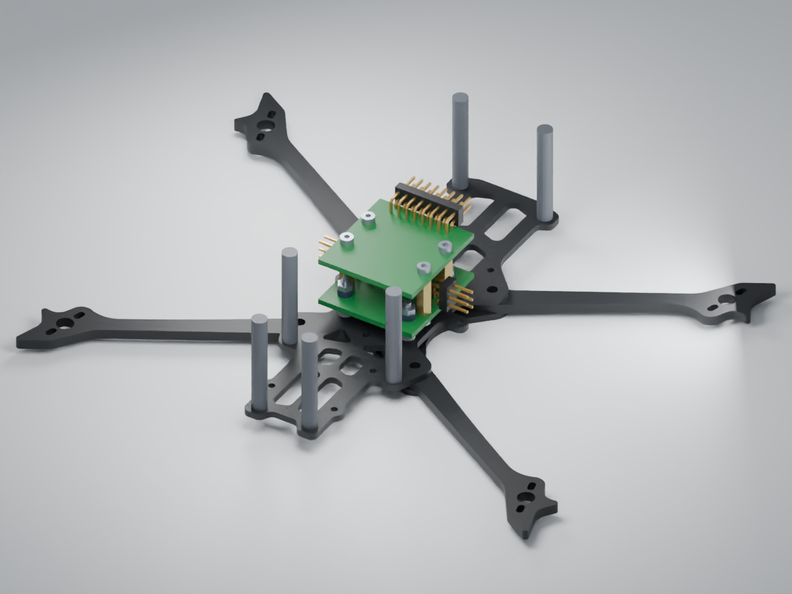
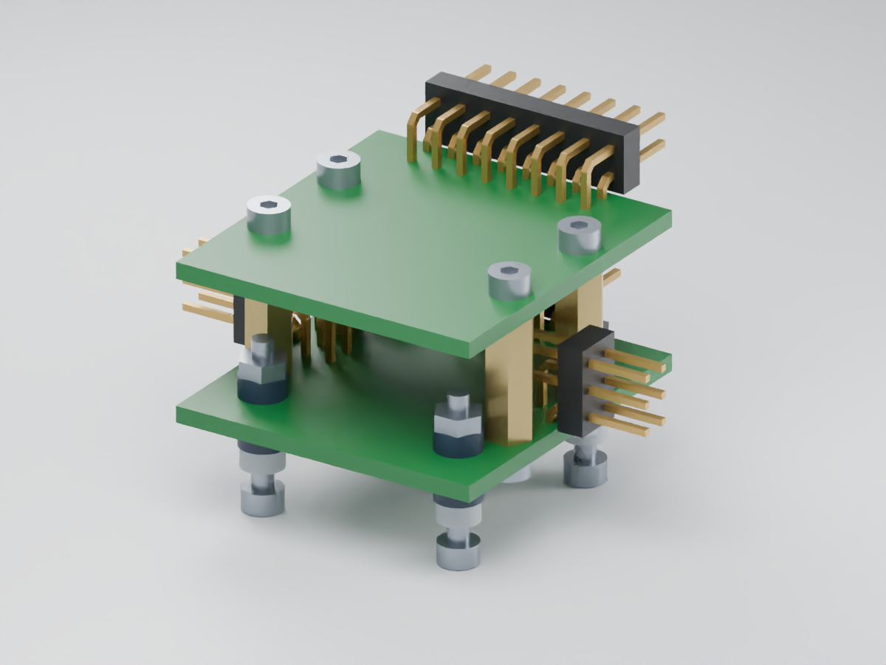

One ongoing flight-controller design, shown on the supplied 4-inch HD Cargo frame.
The mounting is being changed to four rubber grommets directly in the bottom PCB, on 20 × 20 mm centres, with four small standoffs joining the boards. The prior carrier proposal has been archived on disk.
The drone view currently shows the previous board placement. The board view shows the newer electrical placement before mounting-hole changes. Neither is the completed direct-grommet assembly yet.
The upper UART header has 16 contacts: four UARTs, each with GND, 5 V, TX and RX. The shunt is next to the four power solder pads. The 100 mm JST service cable carries USB, boot/reset, SWD, buzzer control and power.
30 × 32 mm boards; four rubber grommets in the bottom PCB on20 × 20 mm centres; four independent12 mm M2 posts join the boards. No carrier. The proposed30 mm frame posts provide clearance under the HD Cargo roof.


The proposed side pins span47.36 mm and clear the supplied frame model. Exact grommet fit, compression, mating plugs, cable bends and connector tolerances remain to be qualified.
Engineering revisions and source evidence are kept in the local design archive. Current routing, exact grommets, mating tolerances and hardware qualification remain in progress.
Frame: ledroneclub, CC BY. Scale reference: US penny, diameter 19.05 mm. Penny image credits · Three.js license.